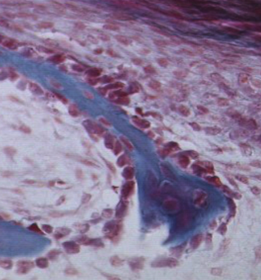
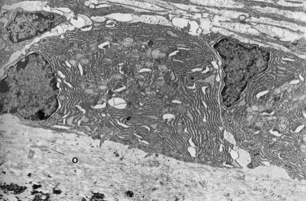

Osteoblasten
Op het LM beeld zien we de botvormingsprocessen tijdens de embryonale ontwikkeling. Op het zich ontwikkelende botbalkje (blauw) hebben zich overvloedig osteoblasten afgezet die zich gedifferentieerd hebben uit de cellen van de bindweefselbekleding van het bot, namelijk het periost(eum). In het periost bevinden zich de stamcellen van de fibroblast/chondroblast/osteoblast-lijn die bij botvorming tot osteoblasten ontwikkelen. Het buitenste oppervlak van het bot kan zo door appositionele groei gevormd en aangepast worden, net zoals bij de kraakbeenstructuren.


Osteoblasten zijn gepolariseerde cellen. Dat wil zeggen dat bepaalde organellen van de cel aan één zijde gelokaliseerd zijn, afhankelijk van de activiteit van de cel. De kern van de osteoblasten ligt tegen de zich vormende botmatrix aan. Op het TEM beeld zie je dat het cytoplasma erg veel celorganellen bevat, die eiwitten synthetiseren en sorteren. Het collageen en de proteoglycanen die gesecreteerd worden door deze cellen zijn op dit moment nog niet gemineraliseerd en worden osteoid (o) genoemd. In de linker benedenhoek zie je al enkele kristallen hydroxy-apatiet.
Op een bepaald moment zal de osteoblast zijn polariteit verliezen en volledig omgeven worden door matrix. Op dat moment worden ze osteocyten genoemd.
Osteoblasten spelen via indirecte hormonale werking op osteoclasten ook een rol bij de botafbraak.